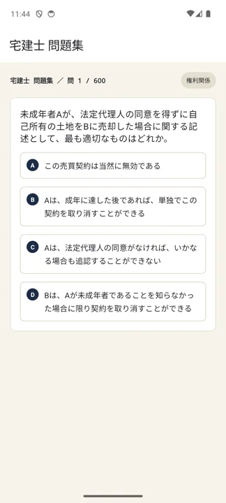
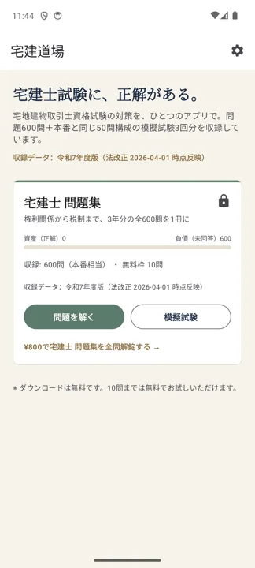
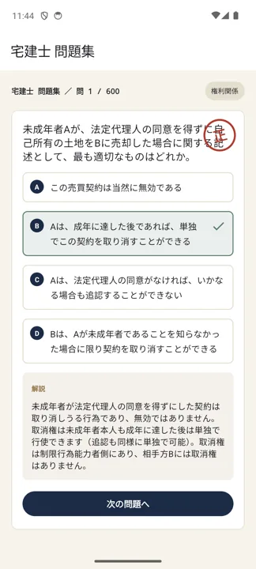

宅地建物取引士（宅建士）試験 対策アプリ
過去3年分を、1冊に凝縮。
「宅建道場」は、宅建士試験に特化した問題演習アプリです。権利関係・宅建業法・法令上の制限・税制など、過去3年分（令和5〜7年度）を出典に厳選した全600問＋模擬試験3回分（各50問）を収録。オフライン学習可・広告表示なし。
アプリでできること
宅建は過去問の焼き直しが多い試験です。このアプリは、過去問を横断的に回して合格ラインに乗せるための道具です。
- 過去3年（令和5〜7年度）から厳選した全600問
- 本番と同じ50問構成の模擬試験3回分
- 分野別演習で、正解・不正解に応じた解説をすぐ確認
- 連続正解数・進捗を記録してモチベーション維持
- インターネット接続なしでも学習可能
- 広告表示なし
- 10問まで無料。全600問＋模試の解放は¥800（買い切り・期限なし）



収録している問題は、宅建士試験の出題範囲と、当該年度の法令基準日（例年4月1日）時点で施行されている法令に基づいて作成しています。学習の判断は最新の公式情報もあわせてご確認ください。
01合格までの学習ロードマップ
宅建は50点満点の相対評価で、合格ラインはおおむね31〜38点。満点はいりません。「取る所で確実に取る」設計が全てです。
まず、得点戦略を決める
| 科目 | 出題数 | 目標 | 方針 |
|---|---|---|---|
| 宅建業法 | 20問 | 18点 | 最重要。ほぼ満点を狙う。過去問の反復で得点が安定する |
| 法令上の制限 | 8問 | 6点 | 数字の暗記（建蔽率・容積率・面積要件など）で取れる |
| 権利関係（民法等） | 14問 | 7〜9点 | 範囲が広く深追い厳禁。頻出論点（意思表示・借地借家・区分所有・相続）に絞る |
| 税・その他 | 8問 | 5〜6点 | 税は2問取れれば十分。統計・地価は直前に最新資料で確認 |
合計で36点前後を狙う設計です。宅建業法と法令上の制限で「落とさない」ことが、そのまま合否を分けます。
学習の順番
宅建業法から始める配点が最大で、努力がそのまま点に変わる分野。最初に着手してアプリの分野別演習で徹底的に回す。
法令上の制限都市計画法・建築基準法・国土利用計画法など。数字を表で覚えて演習で定着させる。
権利関係民法は満点を狙わない。頻出テーマだけを過去問ベースで。深い判例論点は捨てる勇気も必要。
税・その他＋統計直前1〜2か月で。統計問題は試験年の最新の公表資料（地価公示・住宅着工など）を必ずチェック。
過去問の回し方（3周ルール）
- 1周目：肢ごとに〇×の理由を1行で言えるようにする。「なんとなく正解」を潰す。
- 2周目：間違えた肢＋迷った肢だけ。宅建業法は正答率9割を目標に。
- 3周目：直前期に全問を高速回転。模擬試験モードで50問を2時間の感覚に慣らす。
法改正に注意。宅建は当該年度の4月1日時点で施行されている法令が出題対象です。民法・宅建業法・建築基準法などの改正点は、その年の教材・予想問題で必ず確認してください。
02本試験までのスケジュールの組み方
宅建は年1回・例年10月第3日曜。ゴールが動かないので、逆算計画が非常に立てやすい試験です。
ステップ1：まず「申込」を予定に入れる
受験するには7月中の申込が必須です（例年、郵送は7月中旬まで、インターネットは7月末まで）。申し込み忘れは1年の遅れに直結します。7月に入ったらすぐカレンダーに登録しておきましょう。
ステップ2：試験日（10月）から逆算する
| 時期 | やること |
|---|---|
| 試験 −1週間 | 宅建業法・法令の総復習。統計・法改正の最終チェック。持ち物確認 |
| 試験 −1か月（9月） | 模擬試験を毎週。50問2時間の時間配分を固め、弱点分野を再演習 |
| 試験 −3か月（7月） | 過去問演習フェーズへ。宅建業法→法令→権利関係の順で回す |
| 試験 −5〜6か月（4〜5月） | インプット開始。宅建業法からテキストを読む |
ステップ3：学習時間の目安
- 初学者：おおむね300〜400時間（1日2時間なら約5〜6か月、1日1.5時間なら約7か月）
- 学習経験者・法律系の素地あり：200〜300時間
週次テンプレート（平日1.5h・休日3h の例）
| 曜日 | 内容 |
|---|---|
| 月〜水 | その週の分野を分野別演習で各40〜50問＋解説 |
| 木 | 間違えた肢だけ再演習 |
| 金 | 法令の数字・宅建業法の細かい要件を暗記チェック |
| 土 | その週の分野の仕上げ＋前週分野の復習 |
| 日 | 模擬試験1回（9月以降）／またはインプットの遅れ回収 |
直前期（9〜10月）は「新しいことを覚える」より「取れる問題を落とさない」練習に切り替えます。宅建業法の取りこぼしをゼロに近づけることが、合格点への一番の近道です。
03宅建士試験の最新情報（受験ガイド）
実施は一般財団法人 不動産適正取引推進機構。試験は年1回です。
日程（例年の流れ）
| 項目 | 時期 |
|---|---|
| 受験案内の公表・申込開始 | 6月上旬〜7月上旬 |
| 申込期間 | 例年7月（郵送は7月中旬まで／インターネットは7月末まで） |
| 試験日 | 10月の第3日曜日（2025年＝令和7年度は10月19日）。2026年＝令和8年度は10月18日（日）実施予定 |
| 合格発表 | 11月下旬（2025年度は11月26日） |
試験形式
- 試験時間：13:00〜15:00（2時間）。登録講習修了者（5問免除）は13:10〜15:00・45問
- 出題：50問・四肢択一のマークシート方式
- 科目別：宅建業法20問／権利関係14問／法令上の制限8問／税・その他8問
- 法令基準日：試験年の4月1日現在で施行されている法令
- 受験資格：なし（誰でも受験可）
合格基準・合格率
合格は相対評価で、合格点（合否判定基準点）は毎年変動します。近年はおおむね31〜38点/50点の範囲です。
| 年度 | 合格点 | 合格率 | 備考 |
|---|---|---|---|
| 令和7年度（2025） | 33点 | 18.7% | 受験245,462人／合格45,821人 |
| 近年の目安 | おおむね34〜38点 | 15〜18%前後 | 年により変動 |
必ず公式サイトで最終確認を。試験日・申込方法・受験手数料・合格発表日は年度ごとに公告されます。統計問題の対策には試験年の最新の公表資料が必要です。最新情報は
一般財団法人 不動産適正取引推進機構 の公式サイトでご確認ください。本ページの数値は目安です。
よくある質問
独学でも合格できますか？
宅建は独学合格者が多い試験です。テキスト＋過去問演習＋模擬試験が基本形です。宅建道場は「過去問演習」の部分を担当するアプリです。
民法（権利関係）が苦手です。捨ててもいいですか？
全部は捨てられませんが、深追いは禁物です。頻出テーマ（意思表示、代理、借地借家、区分所有、相続など）に絞り、7〜9点を確保する方針が現実的です。その分、宅建業法で満点近くを狙います。
「5問免除」とは何ですか？
登録講習（宅建業に従事している方向け）を修了すると、試験の5問（問46〜50）が免除され、45問・1時間50分の受験になります。実質的に合格ラインが有利になります。
アプリはオフラインで使えますか？
インターネット接続なしで学習できます。広告表示もありません。
Android版はどこで入手できますか？
現在クローズドテスト中です。上の「テストに参加する」からGoogleアカウントでオプトインすると、Google Playからインストールできます。iOS版はApp Storeで公開中です。